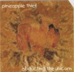

| Artist: | Pineapple Thief |
| Title: | Abducting The Unicorn |
| Label: | Cyclops CYCL 079 |
| Length(s): | 69 minutes |
| Year(s) of release: | 1999 |
| Month of review: | 01/2000 |
| 1) | Private Paradise | 11.47 |
| 2) | Drain | 6.35 |
| 3) | Whatever You Do - Do Nothing | 6.18 |
| 4) | No One Leaves This Earth | 5.56 |
| 5) | Punish Yourself | 4.26 |
| 6) | Everyone Must Perish | 4.36 |
| 7) | Judge The Girl | 6.12 |
| 8) | Parted Forever | 18.27 |
| 9) | ?? | 4.27 |
Nice impressionistic artwork.